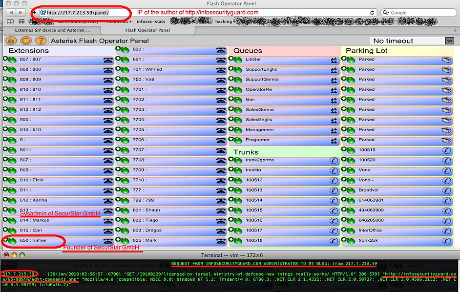

Below evidence that the security review made by an anonymous hacker on http://infosecurityguard.com is in facts a dishonest marketing plan by the SecurStar GmbH to promote their voice crypto product.
I already wrote about that voice crypto analysis that appeared to me very suspicious.
Now it’s confirmed, it’s a fake independent hacker security research by SecurStar GmbH, its just a marketing trick!
How do we know that Infosecurityguard.com, the fake independent security research, is a marketing trick from SecurStar GmbH?
1) I posted on http://infosecurityguard.com a comments to a post with a link to my blog to that article on israelian ministry of defense certification
2) The author of http://infosecurityguard.com went to approve the comment and read the link on my own blog https://infosecurity.ch
3) Reaching my blog he leaked the IP address from which he was coming 217.7.213.59 (where i just clicked on from wordpress statistic interface)
4) On http://217.7.213.59/panel there is the IP PBX interface of the SecurStar GmbH corporate PBX (openly reachable trough the internet!)
5) The names of the internal PBX confirm 100% that it’s the SecurStar GmbH:
6) There is 100% evidence that the anonymous hacker of http://infosecurityguard.com is from SecurStar GmbH
Below the data and reference that let us discover that it’s all but a dishonest marketing tips and not an independent security research.
Kudos to Matteo Flora for it’s support and for his article in Debunking Infosecurityguard identity !
The http referral tricks
When you read a link going from a website to another one there is an HTTP protocol header, the “Referral”, that tell you from which page someone is going to another webpage.
The referral demonstrated that the authors of http://infosecurityguard.com read my post, because it was coming from http://infosecurityguard.com/wp-admin/edit-comments.php that’s the webpage you use as a wordpress author/editor to approve/refuse comments. And here there was the link.
That’s the log entry:
217.7.213.59 - - [30/Jan/2010:02:56:37 -0700] “GET /20100129/licensed-by-israel-ministry-of-defense-how-things-really-works/ HTTP/1.0” 200 5795 “http://infosecurityguard.com/wp-admin/edit-comments.php” “Mozilla/4.0 (compatible; MSIE 8.0; Windows NT 5.1; Trident/4.0; GTB6.3; .NET CLR 1.1.4322; .NET CLR 2.0.50727; .NET CLR 3.0.4506.2152; .NET CLR 3.5.30729; InfoPath.2)”
The PBX open on the internet tell us that’s SecurStar GmbH
The SecurStar GmbH PBX is open on the internet, it contains all the names of their employee and confirm us that the author of http:/infosecurityguard.com is that company and is the anonymous hacker called Notrax.
Here there is their forum post where the SecurStar GmbH guys are debugging IPCOPfirewall & Asterisk together (so we see also details of what they use) where there is the ip 217.7.213.59 .

That’s also really fun!
They sell secure telephony but their company telephony system is openly vulnerable on the internet. :-)
I was thinking to call the CEO, Hafner, via SIP on his internal desktop PBX to announce we discovered him tricks.. :->
They measured their marketing activity
Looking at the logs of my website i found that they was sensing the google distribution of information for the following keywords, in order to understand how effectively they was able to attack competing products. It’s reasonable, if you invest money in a marketing campaign you want to see the results :-)
They reached my blog and i logged their search:
infosecurityguard+cryptophone
infosecurityguard+gold-lock
217.7.213.59 - - [30/Jan/2010:02:22:42 -0700] “GET / HTTP/1.0” 200 31057 “http://www.google.de/search?sourceid=navclient&ie;=UTF-8&rlz;=1T4SKPB_enDE350DE350&q;=infosecurityguard+cryptophone” “Mozilla/4.0 (compatible; MSIE 8.0; Windows NT 5.1; Trident/4.0; GTB6.3; .NET CLR 1.1.4322; .NET CLR 2.0.50727; .NET CLR 3.0.4506.2152; .NET CLR 3.5.30729; InfoPath.2)”
217.7.213.59 - - [30/Jan/2010:04:15:07 -0700] “GET /20100130/about-the-voice-encryption-analysis-phonecrypt-can-be-intercepted-serious-security-evaluation-criteria/ HTTP/1.0” 200 15774 “http://www.google.de/search?sourceid=navclient&ie;=UTF-8&rlz;=1T4SKPB_enDE350DE350&q;=gold-lock+infosecurityguard” “Mozilla/4.0 (compatible; MSIE 8.0; Windows NT 5.1; Trident/4.0; GTB6.3; .NET CLR 1.1.4322; .NET CLR 2.0.50727; .NET CLR 3.0.4506.2152; .NET CLR 3.5.30729; InfoPath.2)”
The domain registration data
The domain have been registered on 1st December 2009, just two months to start preparing the dishonest marketing campaign:
Domain Name: INFOSECURITYGUARD.COM
Registrar: GODADDY.COM, INC.
Updated Date: 01-dec-2009
Creation Date: 01-dec-2009
The domain is anonymously privacy protected trough a whois privacy service:
Administrative Contact: Private, Registration INFOSECURITYGUARD.COM@domainsbyproxy.com , Domains by Proxy, Inc. DomainsByProxy.com
Notrax hacker does not exist on google
As you know any hacker that get public usually have presence of it’s activity on google, attending mailinglists, forum, homepage, past research, participation to conferences, etc, etc.
The fake hacker that they wanted us to to think was writing an independent blog does NOT have any trace on google. Only some hit about an anonymous browser called Notrax but nothing about that hacker.
Maybe when SecurStar provided the anonymity tool to their marketing agency, to help them protecting anonymity for the fake research, their provided them the anonymous browser notrax.So the marketing guy thinking about the nickname of this fake hackers used what? Notrax! :-)
The “independent review”completely oriented in publicizing PhoneCrypt
Of the various review don the phonecrypt review is only positive and amazing good feedback, while the other are only bad feedback and no single good point.
As you can imagine, in any kind of independent product evaluation, for all products there are goods and bad points. No. In this one there are only product that are good and product that are bad.
They missed to consider the security of the technology used by the products
They completely avoided to speak about cryptography and security of the products.
They do not evaluated basic security features that must be in that kind of products.That’s in order not to let anyone see that they did not followed basic security rules in building up their PhoneCrypt.
The technology is closed source, no transparency on algorithms and protocols, no peer review.Read my new comparison (from the basic cryptographic requirement point of view) About the voice encryption analysis (criteria, errors and different results) .
The results are somehow different than their one .
UPDATE: Who’s Wilfried Hafner (SecurStar founder) ?
I got a notice from a reader regarding Wilfred Hafner, SecurStar founder, CEO and security expert.
He was arrested in 1997 for telephony related fraud (check 2nd article on Phrack) earning from telephony fraud 254.000 USD causing damages to local telcos trough blueboxing for 1.15 Million USD.
He was not doing “Blueboxing” for the pleasure of phreaking and connecting with other hackers, but to earn money.
Hacking for profit (and not for fun) in 1997… brrr…. No hacker’s ethic at all!
All in all, is that lawful?
Badmouthing a competitor amounts to an unfair competition practice in most jurisdictions, so it is arguable (to say the least) that SecurStar is right on a legally sound ground here.
Moreover, there are some specific statutes in certain jurisdictions which provide for a straightforward ban on the practice we are talking about. For example in the UK the British Institute of Practitioners in Advertising - in compliance with the Consumer protection from Unfair Trading regulation - ruled that:
”falsely claiming or creating the impression that the trader is not acting for the purposes relating to his trade, business, craft or profession, or falsely representing oneself as a consumer” is a criminal offense.
We have no doubt that PRPR (which is the UK-based *PR company for SecurStar GmbH, led by Peter Rennison and Allie Andrews as stated in SecurStar Press Release) did provide their client with this information. Heck, they *are* in the UK, they simply cannot ignore that!
IANAL, but I would not be surpised if someone filed a criminal complaint or start civil litigation for unfair competition against SecurStar GmbH.
Whether this is going to be a matter for criminal and/or civil Courts or not is not that important. However, it is clear enough that SecurStar GmbH appears to be at least ethically questionable and not really worth of trust.
Nice try, gentlemen… however, next time just do it right (whether “right” for them means “in a honest manner” or “in a fashion not to be caught” I will let them choose)”
Fabio Pietrosanti (naif)